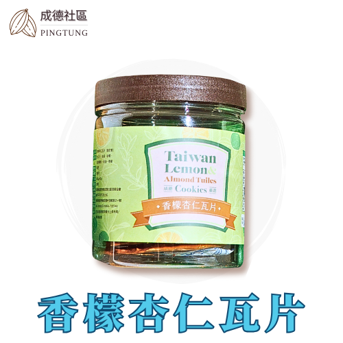
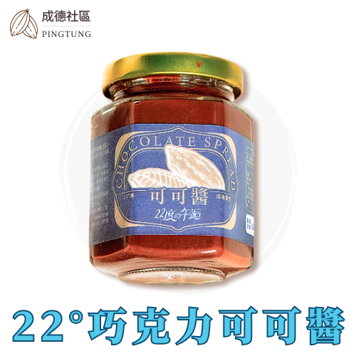

香檬杏仁瓦片
NT$200 · 120g/罐
在地香檬結合杏仁片，酸香酥脆、風味獨特，健康又具地方特色的手作零食。
屏東縣萬巒鄉成德社區發展協會
萬巒鄉 · 樂天知命、安於樸實，打造「安居樂業」的未來願景
看產品成德社區是屏東萬巒的傳統農業村莊，居民世代以一級產業為生，樂天知命、安於樸實。居民齊心改善環境、保存客家文化、推動產業行銷，打造「安居樂業」的未來願景。

NT$200 · 120g/罐
在地香檬結合杏仁片，酸香酥脆、風味獨特，健康又具地方特色的手作零食。

NT$400 · 200g/罐
可可豆結合香檬發酵，果香巧克力交融，口感滑順豐富，創意甜點抹醬首選。